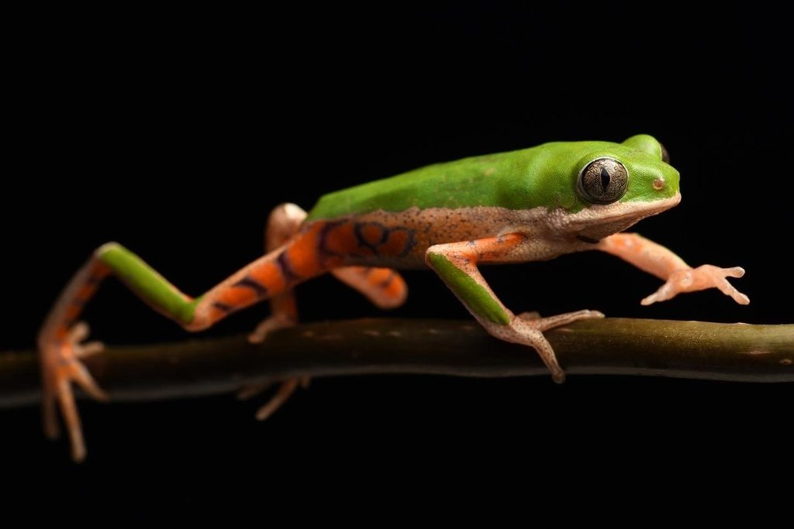

Anura · análisis
¿Qué tan bien reconoce Anura a las ranas de Colombia?
Análisis de Anura, una app para la identificación de anuros.
La aplicación
Anura identifica ranas y sapos a partir de una foto

- Tomas la fotoEn campo, con el teléfono y sin conexión.
- El modelo la comparaLa convierte en un punto y busca el centroide de especie más cercano.
- RespondePropone la especie más probable… o debería decir «no la conozco».
El recorrido
Cinco campos, de lo general a lo difícil
Los datos
Cada cifra pasa por una carga que se hace entera o no se hace
- LeerUn script lee las evaluaciones del proyecto Anura. Nada se escribe a mano.
- ValidarTodo entra en una sola transacción de SQLite. Si una fila rompe una regla, se revierte entera.
- PublicarSolo tras el COMMIT se exportan los archivos que lee esta página.
$ python src/build_data.py COMMIT: distribucion.json, modelo.json, mejora.json, openset.json, centroides.json + database/anura_acid.db
Qué significa ACID aquí
Atomicidad: todo o nada. Consistencia: las reglas CHECK del esquema. Aislamiento: la carga bloquea la base mientras escribe. Durabilidad: tras el COMMIT queda en disco. La página publicada solo lee.